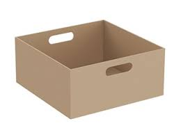

<form>
Una pirámide cuadrada tiene por perímetro de la base 60 cm. Calcula el volumen si la altura es de 25 cm.
<br/> <br/>	

<br/> <br/>
<input id="a" placeholder="Perímetro (cm)"/>
<input id="b" placeholder="Altura (cm)" />
<button type="button" onclick="calcular()"> Calcular </button>
</form>
<div id="resultado"> Resultado: </div>

<script type="text/javascript">
function calcular() {
	a=document.getElementById("a").value;
	b=document.getElementById("b").value;
	c=a/4;
	d=c*c*b;
	e=d/3;
	document.getElementById('resultado').innerHTML="Resultado: " + e + "cm^3";
}
</script>

<?php
	if(isset($_GET)) print_r($_GET);
?>

<br/> <br/>
<form>
Las pelotas de tenis se envasan en tubos cilíndricos que contienen tres pelotas. Sabiendo que cada pelota tiene un diámetro de 8 cm, calcula la longitud del cilindro.
<br/> <br/>	

<br/> <br/>	
<input id="f" placeholder="diametro (cm)"/>
<button type="button" onclick="calcular2()"> Calcular </button>
</form>
<div id="resultado2"> Resultado: </div>

<script type="text/javascript">
function calcular2() {
	f=document.getElementById("f").value;
	g=f*3;
	document.getElementById('resultado2').innerHTML="Resultado: " + g + "cm";
}
</script>

<?php
	if(isset($_GET)) print_r($_GET);
?>

<br/> <br/>
<form>
La edad de Sara es el triple que la de su hija. Dentro de 14 años será el doble. ¿Qué edades tienen Sara y su hija?
<br/> <br/>	

<br/> <br/>
<input id="h" placeholder="años"/>
<button type="button" onclick="calcular3()"> Calcular </button>
</form>
<div id="resultado3"> Resultado: </div>

<script type="text/javascript">
function calcular3() {
	h=document.getElementById("h").value;
	i=2*h-h
	j=3*i
	document.getElementById('resultado3').innerHTML="Resultado: "+"Edad hija= " + i + " años y Edad madre= "+ j + " años";
}
</script>

<?php
	if(isset($_GET)) print_r($_GET);
?>

<br/> <br/>
<form>
Queremos fabricar una caja de base cuadrada, de tal manera que la altura de la caja más el perímetro de la base sumen 60 cm. Determina sus dimensiones para que contenga el mayor volumen posible.
<br/> <br/>	

<br/> <br/>
<input id="u" placeholder="Perímetro (cm)"/>

<button type="button" onclick="calcular4()"> Calcular </button>
</form>
<div id="resultado4"> Resultado: </div>

<script type="text/javascript">
function calcular4() {
	u=document.getElementById("u").value;
    x=2*u/12;
    y= u-(4*x) ;
    v=x*x*y;
            document.getElementById('resultado4').innerHTML = "Resultado: " + v + " cm^3";
}
</script>

<?php
	if(isset($_GET)) print_r($_GET);
?>


